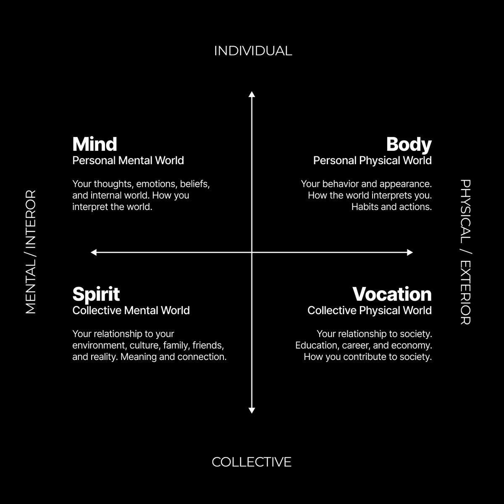

原题：We are in the middle of the digital renaissance, please take advantage of it
作者：Dan Koe（@thedankoe） | 发布：2026-08-28（北京时间；原始时间戳为 2026-08-27 19:01 UTC） | 原文：https://x.com/thedankoe/status/2093051293078261973
译注：【配图】为原文配图位置。开头说"未来会有 3 种人"，但只列出两类（纯粹派、自动机），第三类在后文以"第三个选项"（多维的人）出现，原文如此。"Digital Renaissance Man"与"New Renaissance Man"在原文中混用，分别译为"数字文艺复兴人"和"新文艺复兴人"。
未来会有 3 种人。
他们之间的鸿沟每天都在扩大。
如果你想在接下来 5–10 年里赢，关键在于避免成为第 1 种或第 2 种。
1）纯粹派（The Purists）
"我们是那些保持干净的人。"
那些拒绝 AI、退回到自然、简朴和无屏幕生活中的人。
这是一种平静的生活，直到他们遇到某个使用任何形式技术的人，然后他们会产生一种无法控制的暴烈反应，因为这威胁到了他们对这个新宗教的认同。
当你看着一个纯粹派时，你分不清他们是认真的，还是只是因为这样做显得叛逆又酷。
2）自动机（The Automatons）
那些把每一个决定都外包出去的人。
他们对摩擦过敏，对优化上瘾。如果他们的眼睛没有黏在屏幕上，他们就觉得自己在一场想象中的比赛里落后了。他们的每一个念头都要过一遍 Claude。
他们不知道 AI 在哪里结束、生活从哪里开始。
大多数人认为自己必须选一边。
但我喜欢和大多数人不一样。也许这是一个性格缺陷。也许这听起来很尴尬。但我从中找到了乐趣。过一种极少有人过的生活，是一种创造性的挑战，而我发现，成长（以及由此而来的意义/充实感）并不来自随大流。
我确信两边都错了。
纯粹派拒绝了现实的一整个部分（外在的进步），妖魔化它，并认定它无法通过排定优先级和付出努力被健康地整合进来。

现实有 4 个象限。
就像电子游戏里的技能树。
随着你获得经验、提升等级，你在每一个象限里加点。它们相互关联。你可以试着把钱加满，但如果你的心智、身体或精神一点都没有提升……钱也只能帮你到这儿。生活最丰硕的果实，留给那些接受在生活所有领域持续发展这一挑战的人。
纯粹派把他们的内在世界（心智和精神）视为最高真理，拒绝外在世界。
这是灾难的配方。
无论你多么开悟都没用。如果你身体孱弱、健康堪忧，名下一分钱也没有——你会遭受不必要的痛苦，而你问题的解决方案恰恰是你认为邪恶的东西，所以你别无选择，只能扮演受害者。
另一方面，自动机做的正好完全相反。他们痴迷于金钱和进步，直到他们的人性无处可寻。
然而，还有第三个选项。
对那些无法独立思考的人来说，它听起来疯狂而不可能，但未来属于那些变得多维的人。
下面是你在接下来 10 年里获胜的方式：
数字文艺复兴人：为什么博学者会在 AI 时代获胜
我们正处在第二次文艺复兴之中：工作成果取代简历，受众取代雇主，品味取代资历。
我们这个时代最大的悲剧，是我们被骗得相信机械化的生活（the Mechanical Life）是通往成功的唯一道路。
你被告知要选一条赛道。
你被说服相信拥有多种兴趣是一个性格缺陷。
当设计师。当作家。当工程师、营销人员、销售员，或者干脆找一份你能找到的任何高薪工作，因为那就是你获得尊重、过上好生活的方式。
那似乎很合理，但现在你觉得自己可以被替代。
因为人类本来就不该那样生活。
现代意义上的"工作"只有大约 250 年的历史。
在那之前，理想是一个一生中做许多事情的自由人（相比之下，奴隶只做一项专门的任务……听起来很耳熟）。工匠、农民和海盗，都是懂得运营一整个营生、而不只是其中一块的人的例子。他们既是思考者也是制造者，既是艺术家也是科学家，他们明白，要过上好生活，就不能被局限在一个学习领域里。
列奥纳多·达·芬奇走进韦罗基奥的工作室学习绘画，离开时懂得了解剖学、工程学、光学和青铜铸造。没人告诉他这些是不同的东西，应该作为各自独立的证书或学位来学。
在文艺复兴时期，没人在乎你的细分领域。他们在乎的是你能做到什么。
在工业化时期，工厂模式本意并不是要摧毁教育、批判性思维、个人能动性和品味，但它恰恰做到了这一点。它把我们引离了文艺复兴的理想。教育变成了训练，而不是发现。雇佣和重复性的任务让我们对整个创业过程一无所知，所以我们没有积累起做自己事情的经验或能动性。
不幸的现实是，这对我们来说是正常的。
线性的职业生涯，而不是指数级的。
大众不会质疑它。
而现在 AI 已经到了家门口，只有那些心态开放的人（那些不认同于完全拒绝或完全拥抱下一阶段演化的"队伍"的人）才会利用好这次转变。
视任务而定，一个人现在可以做以前一个 10–50 人团队做的事。一个人现在指尖就能触及所有已知的信息。一个人可以使用社交媒体（他们作品的免费分发渠道）。
如果你是一个真正的新文艺复兴人，这是活着的最好时代——而很多人会试图说服你世界要完蛋了。
AI 现在可以处理那些机器般重复的任务，而在过去两个世纪里，这些任务曾是我们全部的生活方式。人们非常担心 AI 会毁掉我们的思考、让我们更像机器，而他们这辈子早就一直活得像机器了。
对于加入这场第二次文艺复兴的人，你的任务是选择你的手艺，利用 AI 让你能够管理整个营生，并专注于品味、方向和判断——因为 AI 的输出没有视角。AI 就只是那样，人工智能。就像一袋你必须去塑形的水。
成为一个多维的、不可替代的、行走的矛盾体
最有趣的人，都是行走的矛盾体。
肌肉发达的知识分子。随性的亿万富翁。灵性战士。
当你无法被塞进一个别人能轻易理解的盒子里时，生活会更好。
在未来，最有趣的人将是那个活在两个极端之间的人。纯粹的创造力和纯粹的生产力。他们无缝地平衡模拟生活方式（无屏幕、无紧迫感、纯粹享受生活）和 AI 原生生活方式（利用技术做以前不可能的事）。
意义和充实感不在一种扁平的"平衡"生活方式中。它们在对比之中。如果你一直很快乐，你不会把它当作快乐。你会把它当作正常。老实说，有点无聊。你需要更强的狂喜才能感受到你以为的快乐（这就是为什么今天人们离不开手机。正常快乐的生活对他们来说太无聊了）。但当你为自己在乎的东西失败、挣扎和受苦时，你会在另一边学到真正的快乐是什么。
获胜的人会拥抱这种对比。他们深度工作，也深度休息。在自己的手艺和毕生事业上高强度地集中专注，然后是彻底休息的时段——就像世界上最成功的创意人一样。

查尔斯·达尔文一生写了 19 本书。
对于那种产出水平，他的晨间日常会让人吃惊：
早上 7:00——短途散步，然后吃早餐。
早上 8:00–9:30——在书房进行第一段工作。这是他最高效的时段。
早上 9:30–10:30——休息，读信，陪家人。
上午 10:30–中午——第二段工作。到这时，达尔文认为自己已经"做完了一天的好工作"。
中午之后——当天第二次散步，绕着"沙径"（Sandwalk）走，那是他专门为思考和反思修建的一条著名的四分之一英里长的碎石小路。
午饭后——读报纸，然后休息，由妻子为他朗读。
下午 4:00——当天第三次散步，通常还是绕着沙径，有时有人作伴。
达尔文每天大约进行 3 小时专注的创造性工作，分为两段。
我相信，那些将在未来茁壮成长的人会有类似的日常，但产出相当于 10–20 个人，并能够单枪匹马地建立自己的毕生事业。
他们会拥有一个"一人企业"（One-Human Business，我会在另一封信里拆解）。
这个星球上有将近 70 亿人。我希望有一天，会有将近 70 亿家公司。——纳瓦尔·拉维坎特
在工厂和工业化之前，你工作到任务完成为止，而不是到 8 小时的班次结束为止。你按照季节、日光和精力的节律工作。
更重要的是，你不是通过标准化的课程和毫无意义的记忆测试来学会如何变得有价值。
你在做中学。
你在工作室里学习，从学徒到熟练工再到大师，模仿一个懂行的人，直到你自己的品味和判断形成。
现在的问题正是这个。
你如何成为一个新文艺复兴人？
如何成为一个数字文艺复兴人
全都做。
成为作家、设计师、营销人员、电影人、健美运动员、跑者，或者你的好奇心想要的任何东西。
但把你的专注和注意力导入一个载体。
一门手艺。一件你选择以之为人所知的事，而你的多面发展只会增强你超越其他所有人的能力。
下面是你要做的。
选择你的手艺，变得不可替代
大多数艺术家、作家和创意人现在都在反抗 AI，因为他们认同于自己的技能、工具或特定的工作方式。
我不在乎 AI 艺术是不是真正的艺术、AI 写作是不是真正的写作这种争论，因为那看起来是一种绝佳的分心，让你在人生中什么都做不成（除了为了播放量和点赞抱怨，强化一个在未来几年里对你不会有好处的身份）。
你需要一门手艺，但你需要明智地选择你的手艺。
你的手艺位于三者的交汇处：你在乎什么、你能独特地做什么、别人愿意为什么付钱给你。
构建一个不可替代的技能栈有 3 个层次。
第 1 层，是人性的基础。
营销、销售、写作、演讲、心理学等等。它是理解人类注意力的机制，以及人们认为有价值的东西是高度主观的、会随着世界变化而变化。
每一个想以任何形式靠自己成功的人，都必须精通这个领域。
这是"别人愿意为什么付钱给你"的部分。
第 2 层，是你的领域痴迷和独特兴趣。
哲学、健身、设计、编程、营养，或者其他任何东西。这些都不会消失，它们只是在演化。
这些兴趣的组合，就是你独特性之所在。一个肌肉发达的哲学家，远比一个只增长心智、却没有直接经验来检验自己理论的扶手椅哲学家更有价值，也有趣得多。人们会选择你，而不是旁边那个人。
这是"你在乎什么"和"你能独特地做什么"的部分，也是别人来找你的原因。人性基础则帮助你让它对那些人有吸引力。
第 3 层，是技术技能。
邮件营销软件。Photoshop。无代码网站设计。社交媒体管理。在屏幕上一行行敲出代码。
这曾经是最重要的，因为学会这些工具需要时间和努力，但现在 AI 能轻松完成这一切。你不应该把你的未来押在对一个工具的精通上。
每一次技术变革的模式都是一样的。技能中机械的部分被自动化，而人的角色上移一层。抄写员变成了编辑，手工织工变成了机器操作员。
我们稍后会进一步讨论这一点。
如何成为一个危险地自学成才的人
学校教你如何在社会中运作。
这在某种程度上没问题，也是必要的，但它们不教你如何走自己的路。公立学校首先是一种筛选和条件化的机制。
真正的教育是发现。
它是学习实现自我生发的愿景和目标所必需之物的过程，而不是囤积知识或背诵事实、以便在一场与现实不对应的考试中考好的过程。
更糟的是，大多数人在毕业后就停止学习了。
他们到了 20–25 岁，然后在余生重复同一天。他们不追求一个需要独特知识的创造性挑战。
那么你到底如何学习？
你遵循学徒模式。
今天美妙的地方在于，你只要拿起一本书或在手机上打开 YouTube，就能找到导师和大师。
我不在乎你是否用 AI 获取信息。
我不在乎你是否从某一个 YouTube 大师那里获得你所有的建议。
我在乎的是，你是否有一个愿景，有一个目标，朝那个目标努力，并把你学到的东西应用到一路上出现的问题中。这就是你检验所学、验证它对你具体处境是否有效的方式。
不管 AI 会不会产生幻觉，世界上仍然有大量蠢得出奇的人，你大概不该听他们的。无论如何，你都需要质疑、检验和实验。
不要先学再做，那是你陷入教程地狱的方式。
你先做那件事，或者尝试去做那件事，只有那时，你的心智才准备好接收那个能让你向前推进的教训。
一人企业（以及如何加入新经济）
创作者正在取代机构。
我知道这听起来很傻，但你难道看不出来吗？
创作者是新的教育系统——你生活中真正有用的大部分东西，难道不是在 Substack、YouTube、播客或 X 上的垂直账号那里学到的吗？
创作者塑造文化，文化塑造行为——比起那些显然心怀私利的政客，你难道不更信任一个你花时间与其思想相处过的创作者吗？
互联网是无需许可的杠杆——你建立受众、开始一门生意或销售一个产品都不需要批准。这是高能动性的道路。
AI 加速了通才和博学者——你可以成为一个一人企业。用社交媒体上的内容围绕你的毕生事业吸引受众，用代码构建产品、漏斗和数字地产，再加上让你所做之事比旁人更有价值的领域专属知识。
现在当我说创作者时，你大概会想到网红或"个人品牌"。
那不完全是我的意思。
我指的是一个创造价值的人。他们解决问题、创造解决方案，并帮助别人做同样的事。而由于价值交换是人际关系的核心，别人会回报他们，通常以金钱的形式。
詹姆斯·克利尔有个人品牌，是的，但他其实只是在用通讯、书籍、内容和其他媒体，让人们关注他的毕生事业，并赚取独立收入。
我相信大多数有抱负的人未来都会走这条路，即使我们今天所知的社交媒体并不是你把作品摆到别人面前的地方。过去是报纸和电台，现在是社交媒体，谁知道未来会是什么，但从社交媒体起步，会让你领先于其他所有人。注意力就在那里。
个人品牌只是当下成为创作者杠杆最高的载体。不幸的是，它已经变成了一种可营销的"内容创作者"身份，但这就是我们所处的世界。这并不意味着你必须顺从你以为的内容创作者该有的样子。
我们会在以后的信里拆解一人企业，不过下一期创作者训练营 9 月 9 日开始。如果你想学习不可替代的品牌打造、独特的内容，以及不玩花招的社交增长策略，可以考虑在这里加入。https://eden.so/bootcamp
如何用 AI 实现不可能
大多数人没有意识到，AI 不只是一台垃圾内容生成器和一个新时代的搜索引擎。
他们没有意识到，他们确确实实可以让它构建一个软件、落地页、漏斗、应用、工具，或者他们在互联网上做任何事所需的任何其他东西。
"可是 Dan，那只会导致 AI 垃圾！"
没错。而大多数人就停在这里。
他们没意识到迭代的存在。也没意识到，无论有没有 AI，你的第一次迭代都会很烂。
落地页从一份粗糙的草稿开始，然后就看你去做微调，直到它真正有效。
软件一开始 bug 极多、看起来很糟，直到你一遍又一遍地修复 bug，直到它比市场上 99% 的应用都好。
简而言之，人们不明白，他们可以直接问"我怎样才能做到这个？"，然后不断提问，直到形成一个清晰的计划，再让 AI 执行你所选择、你所掌控的愿景，而不是一个随机的猜测，然后继续迭代，直到它有价值。
这仍然需要相当多的时间，而那些只是来找快速多巴胺刺激的人会半途熄火。
下面是一份关于如何用 AI 做任何事的快速入门指南：
1）知道你想要什么，以及"好"是什么样子
对你们大多数人来说，你们会用 AI 来建立一个一人企业。
而如果你不知道如何建立一门生意，你就会指望 AI 在你不知道自己需要什么的情况下替你完美地做好。
要看到任何形式的成功，仍然需要多年的迭代，在这一点上什么都没有改变。
但如果你知道你想要什么、你需要什么，以及"好"是什么样子，那你就可以直接问 AI 它能如何帮你实现这些目标，然后从那里出发。
最好的起点，就是把 AI 当作一个学习工具。
打造报价方案。文案写作。社交媒体。你没法让 AI 去做一件你连想都没想到要问的事。
2）拥有高得离谱的标准
你从 AI 得到的每一个回答都是垃圾，原因是你把初稿当成了终稿。
你不明白你仍然必须调整每一个小设计、功能、词语、句子，或者你让 AI 做的其他任何东西。
你用 AI 做出来的东西很烂，是因为你把 AI 看作一个应该是绝对天才的东西，而不是把它看作一个与你的智力和抱负水平相匹配的工具。
3）试着用 AI 取代你自己。
学习 AI 的最好方式，是尝试把你做的一切都自动化。
你会很快了解什么能被自动化、什么不能。
只有那时，你才能选择你希望 AI 触及你的生意和手艺的哪些部分。
对我来说，AI 显然非常擅长扫描大片信息、寻找模式和趋势。只靠手动在社交媒体上研究头部 YouTube 视频、推文和文章是很傻的，因为那现在会让你处于重大劣势。这就是为什么你现在要用 AI 来做这件事。https://eden.so/
但说到写帖子本身……第一，我喜欢写作的创作过程，所以我把它当作我一天的一部分。第二，写作的价值在读者眼中。而对于代码，没有终端用户在乎代码长什么样。他们看不到它。他们在乎的是它是否对他们有益。这就是我为什么自己写，为了对所提供的价值进行精细的控制。
如果你不知道从哪里开始，就想一想你每天做的任何一件事。
然后，问 AI 它如何能用一个提示词、技能、工具、软件或技能（原文重复了"skill"）把它变成一个可重复的流程。
当然，要明白自动化（提示词/工具/技能）本身也是一份初稿。它一开始会很烂。告诉它如何改进就好。
在以后的信里，我们会深入探讨这封信里提到的一切。数字文艺复兴。如何有效地学习。最值得学习的技能。如何使用 AI 而不毁掉你的思考。如何清晰地思考。以及更多。
感谢阅读。
——Dan
【读者评论】@AIEmmy348019（1 赞）| https://x.com/AIEmmy348019/status/2111439541416456545
> 我叫 Simon。同意，中间道路是这篇文章最有力的部分。我的真实看法：
>
> 站得住的地方：把 AI 输出当作初稿、保持高得离谱的标准、在做中学、让品味和判断成为人的工作。我每天都这样过。我们的影视团队是一位导演加上若干 AI 部门，而让它运转起来的，正是导演的品味。
>
> 我要反驳的地方："纯粹派"是一幅漫画式的丑化（大多数 AI 怀疑者并不暴力）；"一个人 = 一个 10–50 人的团队"取决于具体任务；达尔文一天 3 小时的工作，建立在继承的财富和家仆之上。这篇文章在某种程度上也是一个付费训练营的引流漏斗。
>
> 总体：核心信息不错，只是推销得有点用力。
>
> （译注：此回复原本出现在该用户与 @grok、@bot 的讨论串中，并非直接回复 Dan；收录原因是它对文中三处论断提出了具体、可检验的反驳。）